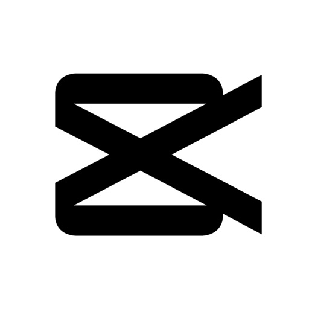
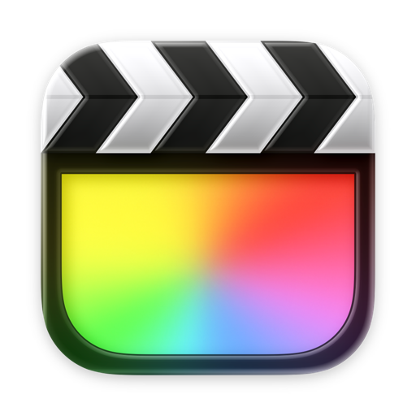

Um vídeo ou só o áudio
Cole o link e escolha entre vídeo, faixa de áudio ou imagem de capa. Veja as informações antes de baixar.
Do vídeo completo à faixa de áudio. Escolha o formato, defina a qualidade e salve tudo no lugar certo.
Gratuito e open source sob MIT. Windows, Mac, Linux, Android e Premiere.
Cole um link, escolha o formato e deixe tudo pronto para editar.
Destino · Downloads / MediaDownloader
Media Downloader · dados ilustrativos



Compatibilidade indicada pelo formatoUma prévia interativa. Nenhum arquivo será baixado.
01Vídeo e áudio no mesmo lugar
02Qualidade que você escolhe
03Arquivos prontos para editar
De um único link a uma coleção inteira, cada download começa com escolhas claras.
Cole o link e escolha entre vídeo, faixa de áudio ou imagem de capa. Veja as informações antes de baixar.
Carregue uma playlist ou canal, selecione os itens e baixe com o mesmo formato. Para links diferentes, use Vários links.
Defina a qualidade padrão nas Configurações. Ela aparece quando o aplicativo abre, com liberdade para mudar a cada download.
A resolução depende do que a fonte disponibiliza. Vídeos menores não são ampliados.
Máxima · até 8K · 4K · 1440p · 1080p · 720p · 480p · 360p
MP4 H.264 ou Apple ProRes 422 HQ para edição.WAV 24-bit · FLAC · MP3 · M4A · original
O formato original preserva a codificação da fonte. Converter não recupera detalhes que ela já perdeu.Escolha abaixo para ver o arquivo e os passos de instalação correspondentes.
Instalador completo para Windows 10 ou 11, 64 bits.
Baixar instalador .EXE ↓v1.4.5 · motores incluídos · padrão: seu usuário
O ZIP da versão anterior continua disponível. Extraia tudo e abra o executável dentro da pasta.
Baixar ZIP portátil v1.0.0Procure MediaDownloader-Windows-x64-Setup.exe na pasta Downloads.
É a opção padrão e não pede administrador. Escolha a pasta e avance. “Todos os usuários” exige permissão de administrador.
O aplicativo e os motores já estão instalados. Não precisa de Python, Node.js ou configurar o PATH.
O instalador ainda não tem certificado de editor. Confira se baixou pelo botão deste site. O SmartScreen pode mostrar “Mais informações” e a opção para executar; políticas de uma organização podem impedir a instalação.
Em Apple → Sobre Este Mac, confira se aparece “Chip Apple” ou “Processador Intel”.
Apple Silicon .DMG ↓Intel .DMG ↓Pacotes publicados: v1.0.0. O novo visual e os novos formatos da v1.3.0 ainda não estão nestes instaladores Mac.
Use a versão correspondente ao chip do seu Mac.
Abra o Media Downloader pela pasta Aplicativos. Os motores de download já vêm no pacote.
Depois de tentar abrir, vá a Ajustes do Sistema → Privacidade e Segurança. Confira o nome do aplicativo e use “Abrir Assim Mesmo”, se disponível.
O aplicativo não é notarizado pela Apple. Consulte a orientação oficial de abertura no macOS. Execução da nova versão em um Mac real ainda pendente.
AppImage para sistemas x86_64.
Baixar .AppImage ↓Pacote publicado v1.0.0 · motores incluídos
Salve em uma pasta que você possa manter.
Nas propriedades do arquivo, habilite a permissão de execução, ou use:
chmod +x MediaDownloader-Linux-x86_64.AppImageSe sua distribuição não oferecer FUSE, tente:
./MediaDownloader-Linux-x86_64.AppImage --appimage-extract-and-runO pacote ARM64 atende à maioria dos celulares atuais.
Baixar Android .APK ↓Android v1.3.7 · motores e assinatura atualizados
As versões atuais usam a mesma assinatura e podem atualizar o aplicativo instalado. Se houver conflito de assinatura com uma versão antiga, confira a origem do APK e preserve suas preferências antes de substituir a instalação.
Encontre o arquivo na pasta Downloads do celular.
O Android pode pedir permissão ao navegador ou gerenciador que abriu o APK.
Aguarde a preparação inicial dos motores. Cole um link ou compartilhe um vídeo para o aplicativo.
Escolha a integração certa. Painéis internos e ferramentas externas têm instalação e recursos diferentes, explicados em cada opção.
Baixe no painel, organize no bin e use a sequência ativa. Preserva as faixas ocupadas.
Beta · painel integrado ao fluxo de projeto e sequência.
Baixar painel AdobeImporte no projeto ou crie uma nova camada na composição, no tempo atual.
Beta · importação no projeto e criação de camada na composição.
Baixar painel AdobeBaixe a mídia e importe na pasta atual do Media Pool. Reutiliza arquivos pelo caminho completo.
Beta · integração Studio e aplicativo Editores com atalhos Scripts.
Baixar integração Resolve
Prepare a mídia e gere um FCPXML para importar no Final Cut no Mac.
Beta · entrega por FCPXML no macOS; aplicativo externo.
Baixar companion para MacBaixe a mídia, abra a pasta ou arraste o arquivo pronto para a importação do CapCut.
Beta · entrega de arquivos por pasta ou arrastar, preservando seus projetos.
Baixar companion WindowsBaixe MP4, ProRes e WAV. Abra a pasta e leve a mídia ao Source Browser do Avid.
Beta · aplicativo externo para preparar arquivos ao Source Browser.
Baixar companion WindowsCompanion macOSComece pelo Desktop: ele fornece os motores de download e conversão. Depois escolha seu editor acima.
A instalação é feita no usuário atual e preserva backup da extensão anterior. O painel Mac está no canal Beta.
O diretório oficial é compartilhado e pode exigir permissão de gravação. O painel interno tem como alvo Resolve Studio. Nas demais edições, use o companion e importe o arquivo pelo Media Pool.
O FCPXML referencia a mídia no seu caminho real. Se transferir do Windows para o Mac, relinque os arquivos no Final Cut.
As marcas identificam os editores de destino. O Media Downloader é um projeto independente, sem parceria ou endosso desses fabricantes. Veja os testes e os limites de cada integração.
Escolha Vídeo ou áudio, Playlist ou canal, ou Vários links.
Confira o formato, a qualidade e a pasta de destino. Salve sua preferência em Configurações.
Acompanhe o progresso real. Ao concluir, abra a pasta pelo histórico de downloads.
Instaladores independentes podem mostrar editor desconhecido no Windows, falta de notarização no Mac ou autorização de fonte no Android. Veja os passos por sistema e como distinguir esses avisos de uma detecção de malware.
Guia de instalação e segurançaNão para a opção padrão “Somente para mim”, em uma pasta do seu usuário. A instalação para todos os usuários ou em pastas protegidas exige permissão.
O aplicativo Desktop já inclui yt-dlp, FFmpeg e FFprobe. Os painéis Adobe e as integrações usam esses motores. Você não precisa instalar Python ou Node.js.
Não. O aplicativo usa os formatos que a fonte disponibiliza, respeitando o limite selecionado. Escolher 8K não transforma um vídeo Full HD em 8K.
WAV é prático para edição; FLAC reduz o tamanho sem perdas adicionais; MP3 e M4A têm ampla compatibilidade. Áudio original preserva o codec da fonte. Converter para WAV não recupera qualidade perdida na origem.
Algumas fontes exigem autenticação para mídia privada ou com restrição. Nas Configurações, selecione um arquivo cookies.txt da sua conta. Use apenas acesso autorizado.
O Desktop Windows está na 1.4.5 e o painel Adobe na 1.4.5. Resolve e o companion são entregas experimentais 1.1.6. O Android está na 1.3.7. Os instaladores Desktop Mac e Linux continuam na 1.0.0. Cada integração informa quais testes foram executados.
Escolha seu sistema e comece pelo instalador certo.